Build and testing
The test equipment and electronics we have built so far, the build package for SILM Monedula, and the flight log we will fill in as testing starts.
Before the aircraft flies we want measured, not quoted, thrust for our motor and propeller. We built a desktop stand that measures the static thrust of small brushless motors under controlled throttle.
The motor sits at a fixed station on a pivoted aluminium arm. Propeller thrust lifts the arm, which pulls a line attached to a Vernier Go Direct force sensor. A hard stop limits travel to a few millimetres, so the geometry stays fixed and only the head mass changes between tests.
F is the live line force, Farm the reading with the head removed, R = Lmotor / Lline the lever ratio, m the mass of motor, adapter and propeller, and g = 9.807 m/s². R and Farm are measured once and stored. T is net thrust in grams.
- The sensor connects over USB; a 16×2 LCD shows thrust and head mass.
- A Python script (RPLCD, godirect, RPi.GPIO) asks for the head mass and applies the formula.
- Throttle comes from a manual servo tester on the 4S, ESC and motor chain; voltage and current are read with a multimeter.
- Propeller removed for first power-up and ESC calibration.
- Throttle down, battery off before any change of propeller or motor.
- Propeller disc kept clear; no sustained high current through meter leads.
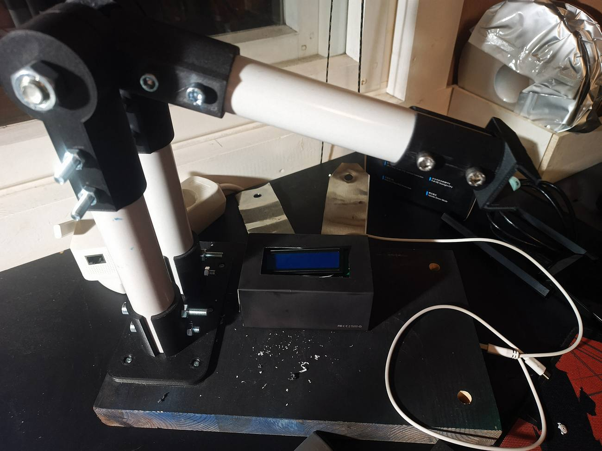
Thrust rig, before the motor is fitted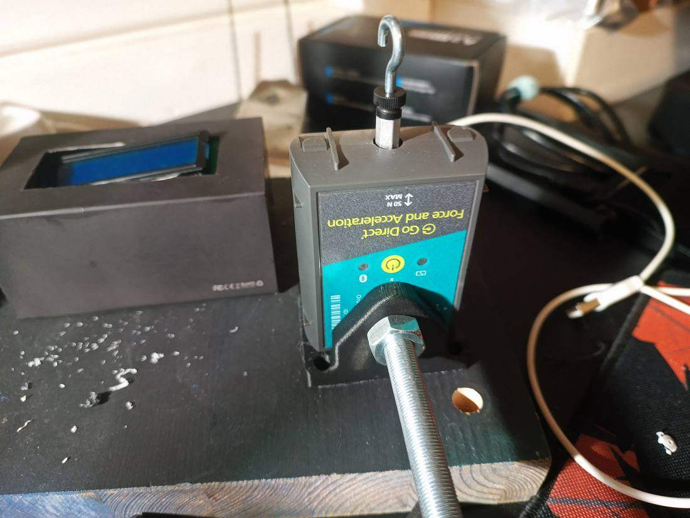
Force sensor and LCD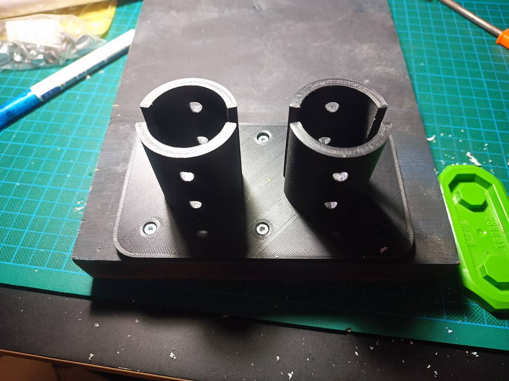
Printed mounts, 19 Oct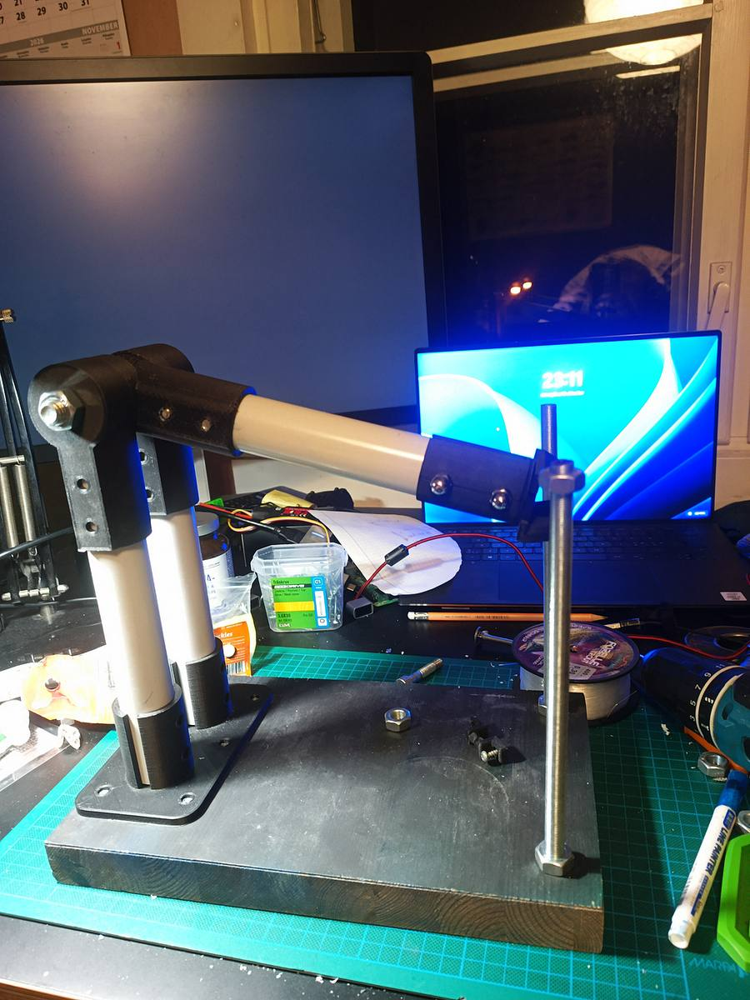
First assembly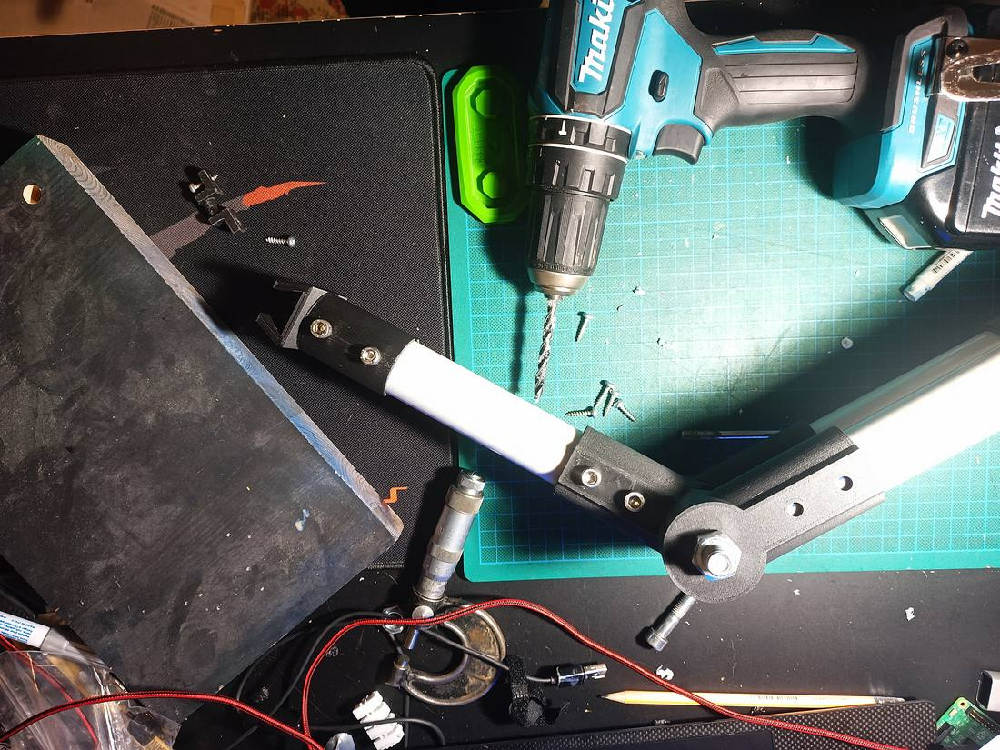
Assembly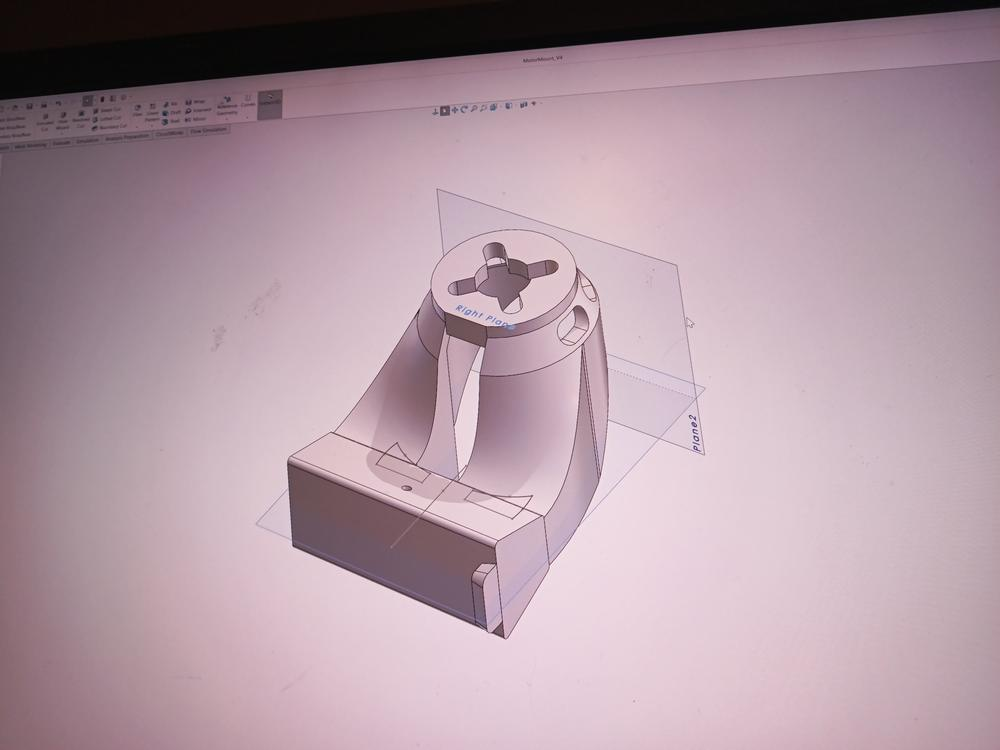
CAD: motor adapter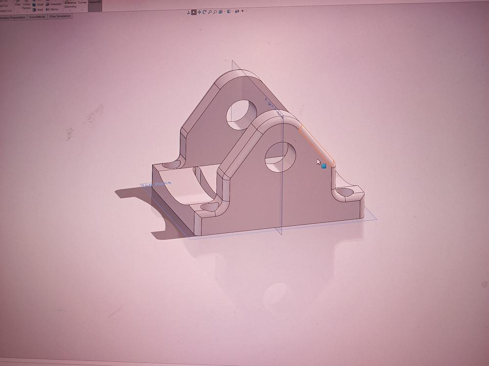
CAD: sensor holder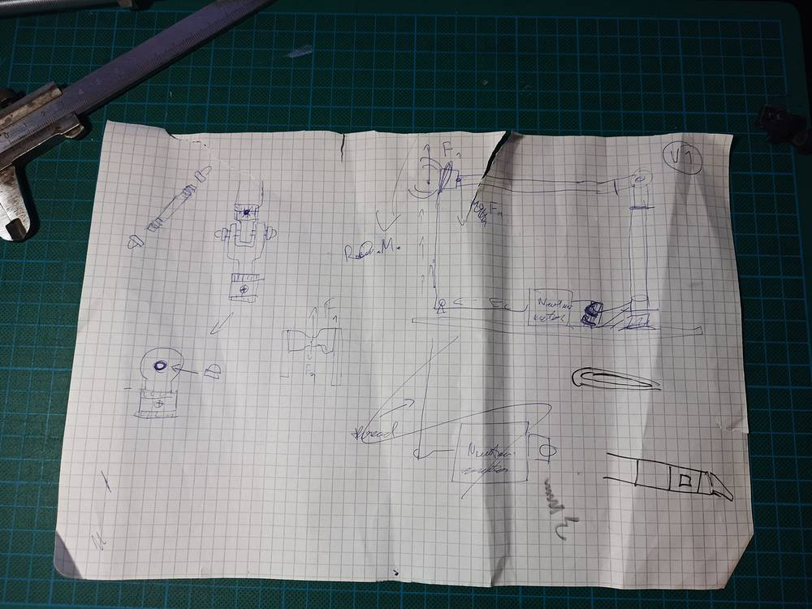
Sketch, version 1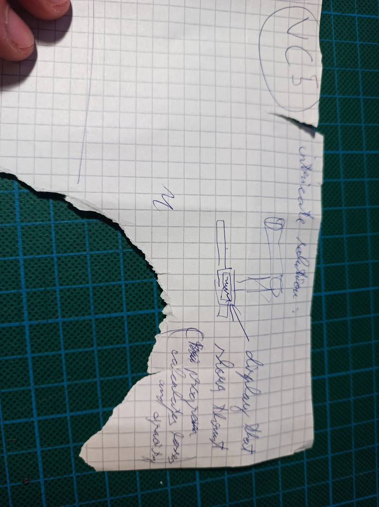
Sketch, version 5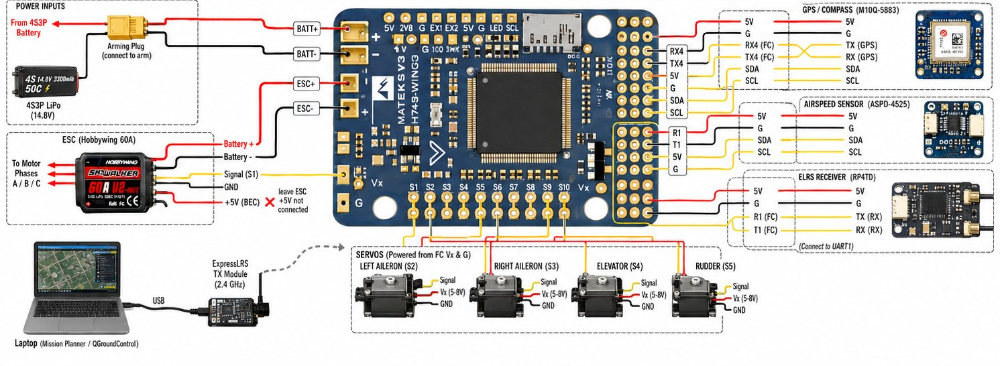
4S LiPo through an arming plug to the flight controller and the 60 A ESC, which drives the motor. The ESC's own BEC output is left unconnected.
GPS and compass on UART4 and I²C, and the digital airspeed sensor on I²C, all on the Matek H743-WING V3.
No radio receiver: missions are uploaded over USB from the laptop planner. Four servos for ailerons and ruddervators are powered from the controller's servo rail.
The physical circuit is due on 30 November. The 4G and WireGuard failsafe (SIM7600E-H module and a Raspberry Pi) is planned as a later addition to the core flight system. Where each part sits in the fuselage is shown in Inside the airframe.
Everything needed to print and assemble SILM Monedula V11b, modelled in FreeCAD, is ready: 69 STEP files labelled with their print material, an illustrated assembly guide and a full materials list. Nothing has been printed yet.
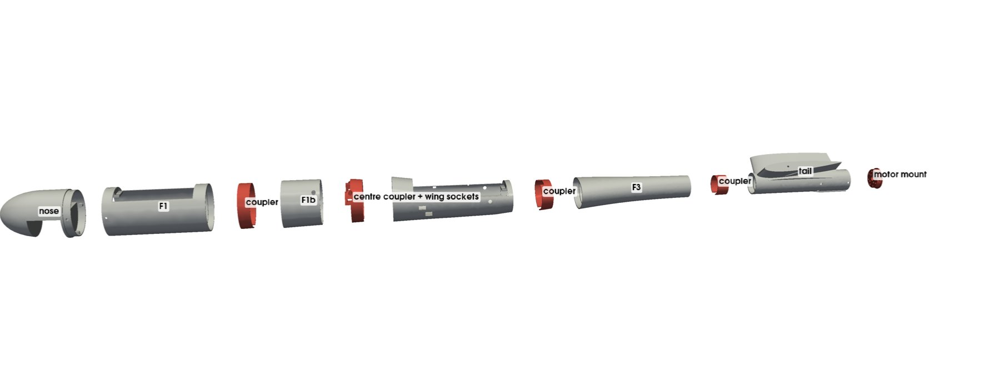
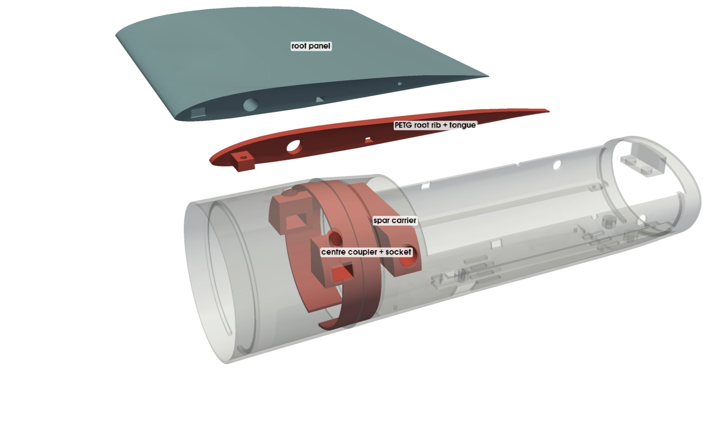
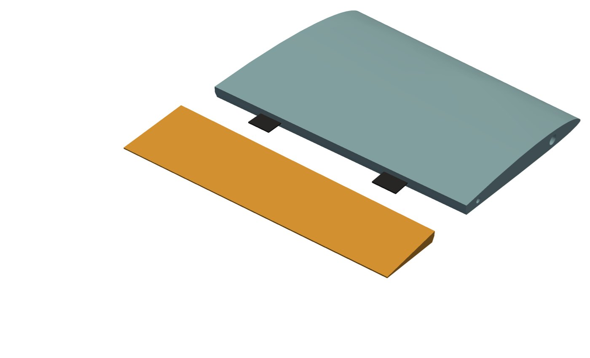
Assembly order
Fuselage
Heat-set inserts first; then the couplers, centre coupler and spar carrier, cured with a wing tongue in each socket so they line up.
Bay and electronics
Flight controller, power board and ESC on the lower rack; Raspberry Pi and 4G modem on the upper rack; GPS in F3 before it is closed.
Wings
Panels on the carbon rods, PETG root rib bonded with the tube in place, servo in its PETG frame, TPU hinges and PETG horns.
Tail and motor
Tail servos on the PETG bulkhead, pushrods through the guides, V-tail on its stubs, motor on the PETG end mount.
Sleds, hatches and balance
TPU sleds screwed on, hatch lips and magnets fitted, then the balance set to 361.5 mm with the battery.
| Test | Date | Result | Notes |
|---|---|---|---|
| Static thrust, AT2321 with 10 in propeller | 14 Nov (24 Nov latest) | Pending | On our thrust rig |
| Weighing printed parts, CG check | As parts are printed | Pending | Replaces the estimated masses; sets the battery position |
| Ground systems check | After 30 Nov | Pending | Control surfaces, link, failsafe |
| First hand-launch | Stretch goal | Pending | Before 8 Dec if the airframe is complete |
| Endurance and range validation | After presentation | Pending | Checks the 100 min target |
UAV SILM is an ongoing student STEAM project, not a finished aircraft. Every figure on this page (mass, endurance, cost, balance, control response) is a theoretical estimate from CFD analysis and hand calculation, not from flight-test data. The 3D models show our CAD and simulation results, not a built aircraft.
We have not held formal discussions with Kaitseliit or the Estonian Defence Forces; we present the platform as a design study and a longer-term aim toward a working, versatile aircraft.